Debugging and profiling
Set a breakpoint, load the page and step through it, or profile a request to see where the time went.


Step through a request
Xdebug comes with Phun, so there is nothing to install. In the code editor, the bug button turns it on for the application. Click beside a line number to set a breakpoint, load the page, and it stops there with the line highlighted. The panel under the editor steps over (F8), into (F7) and out (Shift+F8), continues on F9 (Cmd+Alt+R on macOS), shows the stack and opens arrays and objects in the variables.
Breakpoints are remembered, and breakpoints in a listed package count too, so you can stop inside a package an application uses.
phun debug blog on # Xdebug on port 9003
phun debugging # what is being debuggedDebug a test
A test file's run markers can debug a single Pest test or PHPUnit method, stopping at your breakpoints. Ctrl+Shift+F9 debugs the test at the cursor (Ctrl+Shift+D on macOS).
Profile a request
A logged request on the Metrics tab has a Profile button. Phun sends it again with Xdebug tracing it and shows where the time went as a flame graph, with the application's code, packages and PHP's own functions in their own colours; click a call to look inside it. Every database query the request ran is listed, and a query run three times or more from one line is marked as a likely N+1, with its line, or the Blade view it came from, a click away in the editor.
phun profile blog on # trace requests that carry the XDEBUG_TRACE cookieExceptions
Every file and line in a stack trace in an application's log opens the editor at that line, and the Logs panel's Exceptions button lists each exception once with how often it was thrown and when last.